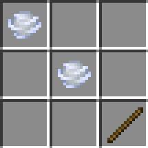
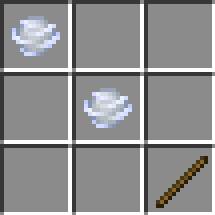

【風の杖】
はじめに
以下のようにウインドチャージをそのまま投げると、投げた方向によっては障害物に当たらない限り、落下運動が働かずに延々とワールドを彷徨う事があります。

これを避ける意味も踏まえて今回は以下の２つの目的で作成しました。
これを避ける意味も踏まえて今回は以下の２つの目的で作成しました。
- ・ウインドチャージの重力化
- ・カスタムエンティティの発射
ウインドチャージの重力化
バニラでのウインドチャージのデータはほぼ流用できますので、今回はウインドチャージの本体（<ビヘイビアパック>/entities/wind_charge_projectile.json）のみを持ってきて、これにカスタマイズをかけていきます。
バニラのデータは以下の通り。
<ビヘイビアパック>/entities/wind_charge_projectile.json
以下の２点が、上記の黄色で示した重力に関わる部分の定義です。
それに比べて後者の方は
ところが不思議な事に、この定義をカスタムエンティティ化して動かしてみると、どの方向へ投げても重力が働いていたので前者の定義が優先されているようです。
何故かはわかりませんが今回の実装を通して、既存のものとカスタムエンティティ化したものとでは優先される定義が異なっている事がわかりました。
いずれにしても結果オーライという事で、今回は
以下のように風の杖を使うと重力化したウインドチャージを発射できます。

バニラのデータは以下の通り。
<ビヘイビアパック>/entities/wind_charge_projectile.json
{
"format_version": "1.21.40",
"minecraft:entity": {
"description": {
"identifier": "minecraft:wind_charge_projectile",
"is_spawnable": false,
"is_summonable": true
},
"components": {
"minecraft:explode": {
"power": 1.2,
"particle_effect": "wind_burst",
"sound_effect": "wind_charge.burst",
"knockback_scaling": 1.22,
"negates_fall_damage": true,
"causes_fire": false,
"breaks_blocks": false,
"allow_underwater": true,
"toggles_blocks": true,
"damage_scaling": 0,
"max_resistance": 0
},
"minecraft:collision_box": {
"width": 0.3125,
"height": 0.3125
},
"minecraft:projectile": {
"on_hit": {
"impact_damage": {
"damage": 1,
"max_critical_damage": 1.0,
"knockback": true
},
"wind_burst_on_hit": {}
},
"power": 1.5,
"gravity": 0.0,
"inertia": 1.0,
"liquid_inertia": 1.0,
"uncertainty_base": 1.0,
"uncertainty_multiplier": 0.0,
"reflect_on_hurt": true,
"multiple_targets": false,
"reflect_immunity": 0.5,
"ignored_entities": [
"ender_crystal",
"wind_charge_projectile",
"breeze_wind_charge_projectile"
]
},
"minecraft:physics": {
},
"minecraft:pushable": {
"is_pushable": false,
"is_pushable_by_piston": true
},
"minecraft:conditional_bandwidth_optimization": {
"default_values": {
"max_optimized_distance": 80.0,
"max_dropped_ticks": 7,
"use_motion_prediction_hints": true
}
},
"minecraft:type_family": {
"family": [ "wind_charge", "wind_charge_projectile" ]
}
}
}
}
以下の２点が、上記の黄色で示した重力に関わる部分の定義です。
- ・minecraft:physics
- ・minecraft:projectileブロック内のgravity（=0.0）
それに比べて後者の方は
0.0で設定されているので、この設定が優先されて無重力状態になっているようです。ところが不思議な事に、この定義をカスタムエンティティ化して動かしてみると、どの方向へ投げても重力が働いていたので前者の定義が優先されているようです。
何故かはわかりませんが今回の実装を通して、既存のものとカスタムエンティティ化したものとでは優先される定義が異なっている事がわかりました。
いずれにしても結果オーライという事で、今回は
description内のidentifier（識別子）の変更だけで済みました。以下のように風の杖を使うと重力化したウインドチャージを発射できます。
カスタムエンティティの発射
今までの実装でもそうでしたが、基本的には既存アイテムへの影響を与えないようにするため、アイテムのデータ値で制御するかカスタムアイテムを自作するかのどちらかの方法をとってきました。
今回は発射アイテムも含めて発射体エンティティもカスタムエンティティ化するようにしていますが、折角なので補充アイテムがなくても使えるものを作ってみました。
基本的な作り方は▶発射アイテムや▶発射体エンティティのページでご紹介していますが、今回は発射アイテムの定義を以下のようにしています。
<ビヘイビアパック>/item/wind_rod.json
黄色で色分けしている部分が今回のポイントとなる部分です。
内容は以下の通り。
今回は発射アイテムも含めて発射体エンティティもカスタムエンティティ化するようにしていますが、折角なので補充アイテムがなくても使えるものを作ってみました。
基本的な作り方は▶発射アイテムや▶発射体エンティティのページでご紹介していますが、今回は発射アイテムの定義を以下のようにしています。
<ビヘイビアパック>/item/wind_rod.json
{
"format_version": "1.20.50",
"minecraft:item": {
"description": {
"identifier": "customize:wind_rod",
"menu_category": {
"category": "none"
}
},
"components": {
"minecraft:icon": {
"texture": "wind_rod"
},
"minecraft:display_name": {
"value": "item.customize:wind_rod.name"
},
"minecraft:can_destroy_in_creative": false,
"minecraft:hand_equipped": false,
"minecraft:damage": 6,
"minecraft:glint": true,
"minecraft:use_animation": "bow",
"minecraft:use_modifiers": {
"use_duration": 1.6,
"movement_modifier": 0.35
},
"minecraft:shooter":{
"ammunition" :[{
"item" :"customize:wind_rod", // ←①自身の発射アイテムを補充アイテムとする
"use_offhand" :true,
"search_inventory" :true,
"use_in_creative" :true
}],
"max_draw_duration" :0.1,
"scale_power_by_draw_duration" :true,
"charge_on_draw" :false
},
"minecraft:projectile": {
"projectile_entity": "customize:wind_rod_projectile" // ←②発射体エンティティの指定
},
"minecraft:cooldown": {
"category": "wind_rod",
"duration": 1.0
},
"minecraft:enchantable": { // ←③エンチャント可能にする
"slot": "bow",
"value": 0
}
}
}
}
黄色で色分けしている部分が今回のポイントとなる部分です。
内容は以下の通り。
- ①補充アイテムの指定（minecraft:shooter）
- この定義を入れる事で補充アイテムが要らなくなります
- ②発射体エンティティの指定（minecraft:projectile）
- 自身の発射アイテムを補充アイテムとしているので発射体エンティティを指定する必要があります
- ③エンチャント可能にする（minecraft:enchantable）
- 上記の設定だけでは１回発射するだけで自身のアイテムが消滅してしまうので、エンチャント付与可能な状態で「無限」のエンチャントを付与する事によって無限撃ちを可能にしています
「風の杖」の取得
本環境のビヘイビアパック／リソースパックを含めたアドオンパックを適用しておけば、以下の方法で「風の杖」が手に入ります。
▼レシピパターン

▶ネットショップ

クラフトする場合
▼必要な素材▼レシピパターン

ショップで購入する場合
以下のショップで購入できます。▶ネットショップ
コマンドで取得する場合
以下はワールドオーナーやシステム組み込み用としてコマンドで取得する方法です。おわりに
本来であれば▶発射アイテムのページでご紹介したように補充アイテムを準備する必要がありますが、補充アイテム要らずの無限撃ちを実現するために発射アイテムのJSONデータを再帰的に実装しているイメージで捉えて頂ければよろしいかと思います。
ちなみに▶ネットショップで手に入れたものは購入特典としてあらかじめエンチャントを付与した状態で配布していますので、カスタムレシピを使わない限りは
また▶召雷の魔石実装時と同じように、Websocketサーバーを介してネットショップと接続中は発射できないようにしています。
今回のアイテムの実装は▶発射アイテムの作り方を基に応用したものです。
発射体エンティティの作り方については▶発射体エンティティのページをご覧ください。
ちなみに▶ネットショップで手に入れたものは購入特典としてあらかじめエンチャントを付与した状態で配布していますので、カスタムレシピを使わない限りは
minecraft:enchantableブロックを定義しなくても利用する事は可能です。また▶召雷の魔石実装時と同じように、Websocketサーバーを介してネットショップと接続中は発射できないようにしています。
今回のアイテムの実装は▶発射アイテムの作り方を基に応用したものです。
発射体エンティティの作り方については▶発射体エンティティのページをご覧ください。